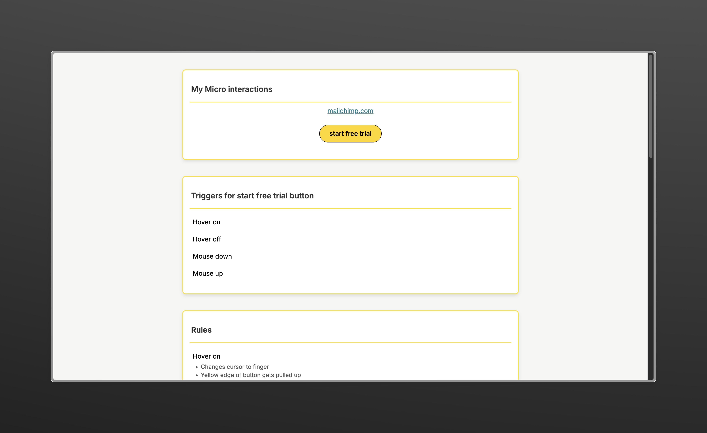

Established the foundational layout and implemented basic interactions without advanced feedback. Focused on replicating Mailchimp’s core functionality in a simple, static form.
Introduced initial microinteractions, such as cursor changes on hover and basic button animations. Began refining how visual and tactile feedback guided users through tasks.
Integrated a full set of microinteractions—error message animations, slider transitions, and notification pop-ups—culminating in a polished, responsive user experience.
This project focused on enhancing the Mailchimp homepage by strategically incorporating microinteractions. Over 10 weeks, I iteratively refined user feedback mechanisms using HTML, CSS, and JavaScript. Each build introduced more nuanced interactions, ensuring that users received immediate, helpful visual and tactile responses. The final implementation maintained Mailchimp’s brand identity while making the interface more intuitive and engaging.
Mailchimp’s homepage, while robust, often left users uncertain about their actions due to limited interactive feedback. Essential features like form submissions and button states felt static, making the user journey less clear. The goal was to integrate microinteractions to guide users at each step—hovering over a button, submitting a form, or encountering an error—so they felt confident in their actions. This challenge involved not just adding animations, but ensuring these interactions communicated meaningful information without overwhelming the user.
The process began with analyzing Mailchimp’s existing workflows and identifying moments where microinteractions could reduce friction. Early sketches and wireframes clarified where cursor changes, button states, and notification triggers would be most effective. User feedback and competitor analysis underscored the need for immediate, visually distinct responses, leading to iterations that refined timing, color transitions, and element hierarchy.
As the builds progressed, insights emerged about balancing subtlety and clarity. Overly complex animations risked confusing users, while too simplistic effects lacked sufficient guidance. Striking the right balance—such as a gentle button lift on hover or a smooth slider transition on form submission—helped users navigate the interface with greater ease.
Testing each build involved user observations, A/B comparisons, and performance checks. For example:
These tests guided refinements. Adjusting animation durations, tweaking hover state colors, and smoothing slider transitions ensured each microinteraction contributed positively to the overall user experience.
The final build integrated a suite of microinteractions that addressed key pain points:
Each microinteraction was documented with triggers, rules, feedback, loops, and modes, ensuring a predictable and delightful user experience. These enhancements maintained brand cohesion by using Mailchimp’s colors and aesthetics, reinforcing trust and familiarity.
By focusing on these targeted microinteractions rather than a full site overhaul, the improvements were both meaningful and measurable:
These outcomes confirmed that small, well-implemented microinteractions can significantly elevate the user experience.